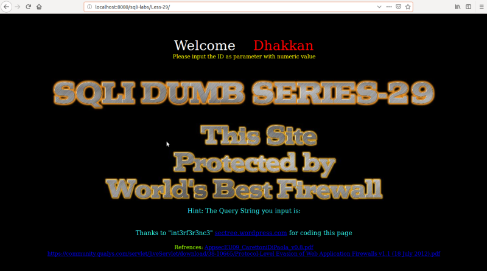

Testing Apache Tomcat
In your browser go to
http://localhost:8080/sqlil-labs/Less-29/
/

You can see the "HTTP Parameter Pollution (HPP) on this link
https://owasp.org/www-pdf-archive/AppsecEU09_CarettoniDiPaola_v0.8.pdf
Index